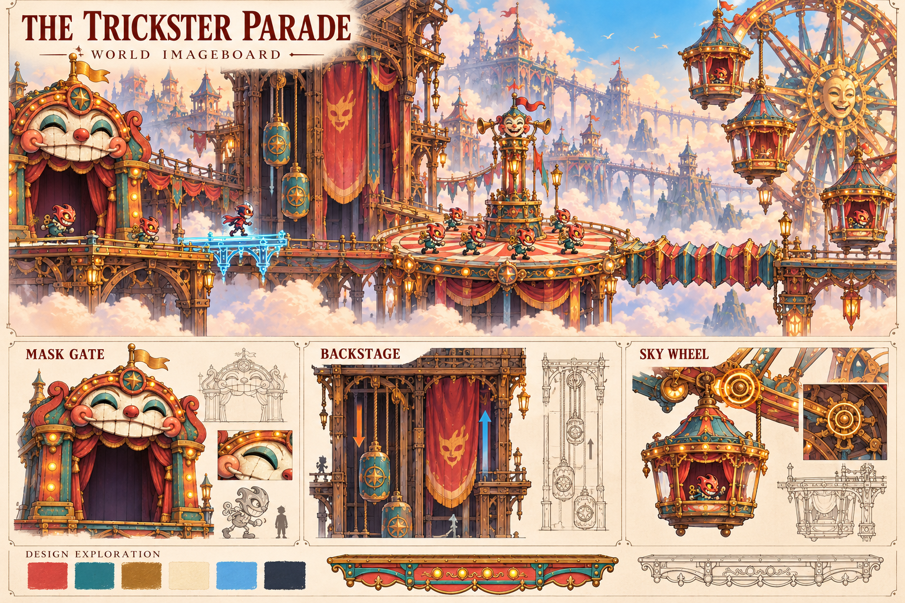
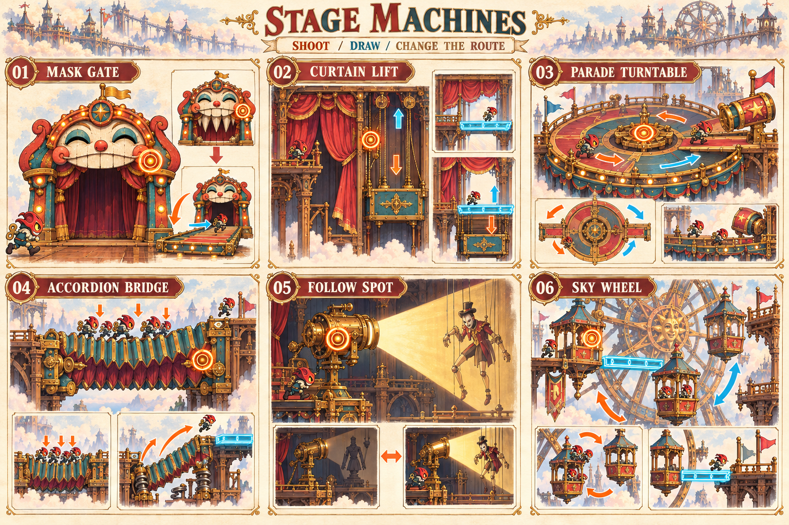
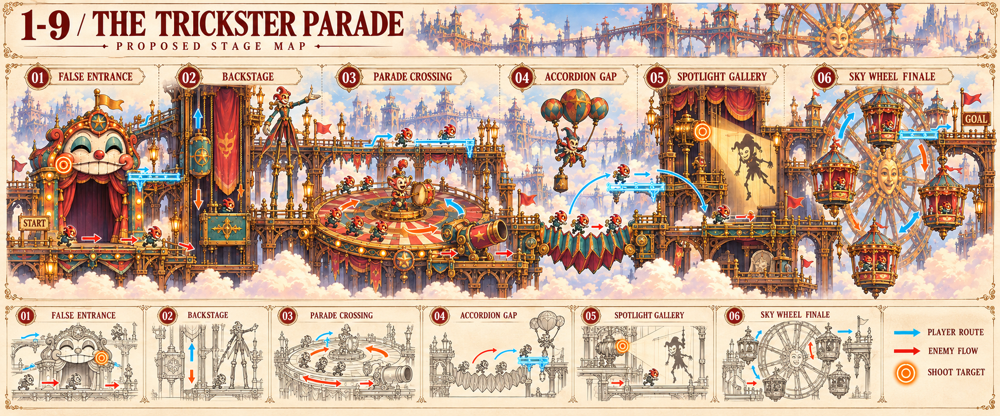
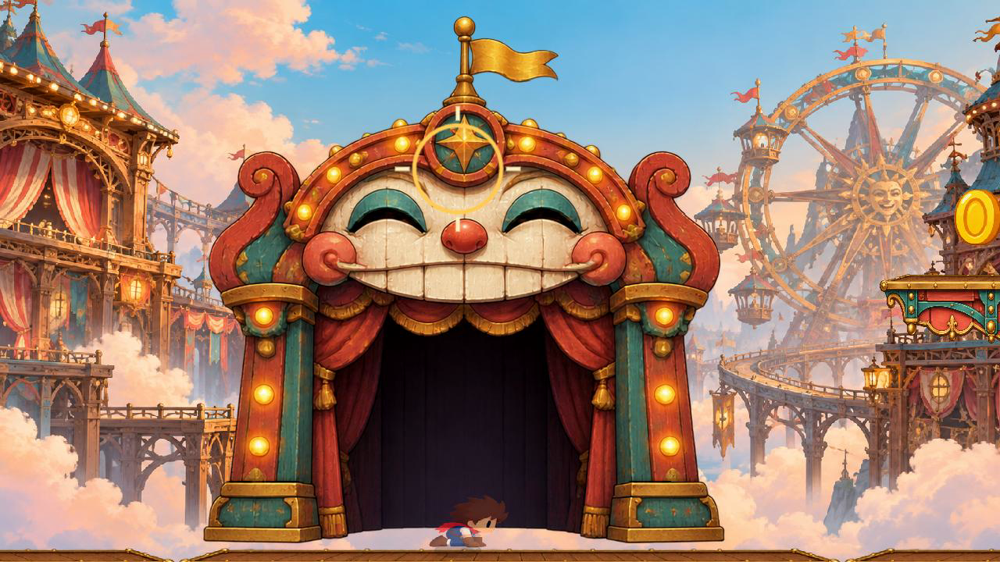
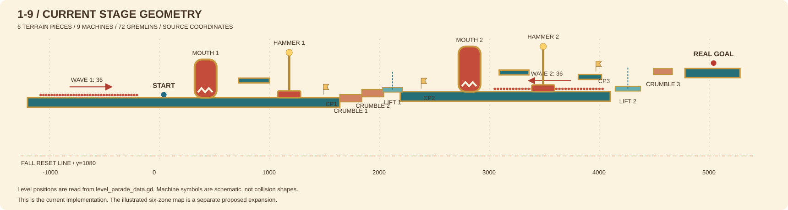

WIND-UP GREMLIN
ぜんまい小鬼
既存の敵。群れの重さで橋と観覧車を動かす。
動画の「空に浮かぶからくり劇場」を広げた設定集。舞台装置を動かすと通路と敵の流れが変わり、その結果を見て二人が次の操作を決めます。
01 / WORLD IMAGEBOARD
珊瑚色の木、青緑の金属、真鍮の歯車、仮面とぜんまい。動画にあった背景の観覧車も、終幕では乗り移って進む舞台装置になります。

画像を選ぶと原寸で開きます
02 / STAGE MACHINES
幕は通路を切り替え、回り舞台は群れを分け、蛇腹橋は重さを跳躍へ変えます。琥珀色の同心円は射撃できる箇所、青い描線は相棒が作る足場です。

画像を選ぶと原寸で開きます
回り舞台の大砲は演目用の補助装置。主人公も群れも同じ射線を通るため、回転の方向と通過時刻を選びます。現在のハンマーを継続する場合も、この出口の危険として配置できます。
03 / THE PARADE CAST
既存の小鬼を残し、四つの異なるシルエットと行動を追加する案です。追跡に加えて、群れの指揮、高所の妨害、重りの投下、照明による変身を持たせます。

画像を選ぶと原寸で開きます
ぜんまい小鬼
既存の敵。群れの重さで橋と観覧車を動かす。
鼓笛隊長
振り上げを予告に、周囲の小鬼を一斉に跳ばせる。
竹馬の案内役
高い通路を掃く。膝を撃つと脚が一時的な斜面になる。
風船道化
ひもを撃つと重りが落ち、群れや橋に作用する。
影の人形
光の中で敵、暗い場所で固い小道具になる。
04 / PROPOSED STAGE MAP
青は主人公の経路、赤は群れの流れ。上下の通路を設け、射撃、誘導、重さ、照明、乗り移りへと判断を変えていきます。区画を選ぶと二人の操作と救済方法が表示されます。

画像を選ぶと原寸で開きます
下顎が橋になる仮面門
主人公が噛みつきを避け、相棒が頬の留め金を撃つ。
開いた橋を小鬼も渡る。通路を作った直後に追跡が始まる。
上に描いた足場へ退避し、群れを先に通す。
このマップは新しい空間構成の設計案です。実測の当たり判定やジャンプ距離を表す図ではありません。新しい装置と敵の挙動は、プレイ可能な試作で検証する段階です。
05 / CURRENT IMPLEMENTATION

現在は口の門2基、ハンマー2基、崩れる床3枚、昇降床2枚、小鬼72体。下の図は現在のソース座標から作成しています。

画像を選ぶと原寸で開きます
上の生成画4枚は拡張案です。この設定集の制作でゲームのコードと実行用アセットは変更していません。面白さと二人操作時の負荷は、見た目の設定画からは判断できません。